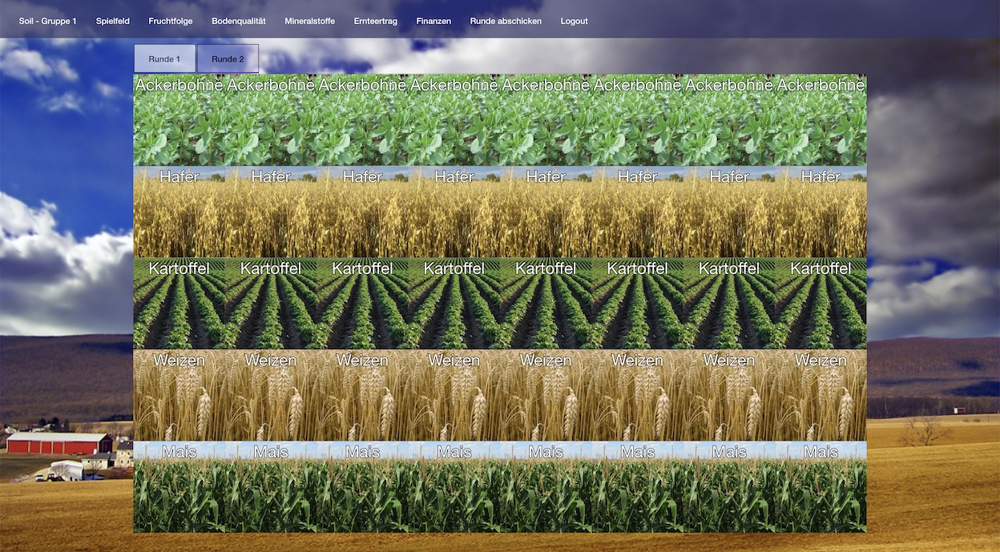

<div fxLayout="column wrap" fxLayoutAlign="start center" fxLayoutGap="10px">
    <mat-card>
        <mat-card-title>Übersicht</mat-card-title>
        <mat-card-content>
            Soil ist ein interaktives Planspiel zum Thema Landwirtschaft. Die Spieler können hierbei ökologische und
            ökonomische Entscheidungen treffen und deren Auswirkungen erfahren.
            
        </mat-card-content>
    </mat-card>
</div>